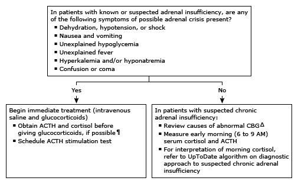

ACTH: corticotropin; CBG: corticosteroid-binding globulin.
* Serum cortisol concentrations are higher in the early morning (about 6 AM), ranging from approximately 10 to 25 mcg/dL (275 to 690 nmol/L), and lower in the afternoon, with 4 PM values ranging from 2 to 14 mcg/dL (55 to 386 nmol/L). Interpretation of a specific abnormal test result should be based upon the reference range reported with that result.
¶ The treatment of patients who present in possible adrenal crisis should not be delayed while results of diagnostic tests are pending.
Δ Interpretation of the serum cortisol assumes no abnormalities in CBG. An incorrect diagnosis may be made if the usual cortisol thresholds are applied to patients with abnormalities in CBG, including:Refer to UpToDate content on diagnosing adrenal insufficiency in the setting of abnormal CBG.